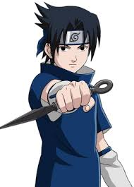
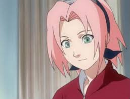
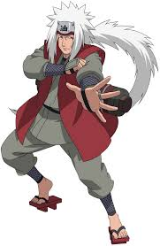
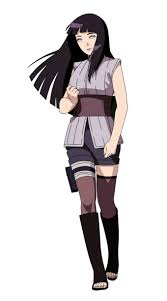
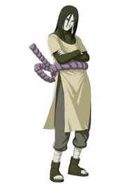
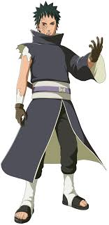
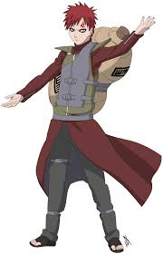

Naruto é uma série de mangá escrita e ilustrada por Masashi Kishimoto, que conta a história de Naruto Uzumaki, um jovem ninja que constantemente procura por reconhecimento e sonha em se tornar Hokage, o ninja líder de sua vila.
Personagens
Naruto
Naruto Uzumaki é um personagem fictício da franquia de mangá e anime Naruto, criada por Masashi Kishimoto. Servindo como o protagonista homônimo da série, ele é um jovem ninja da vila fictícia de Konohagakure. Os aldeões de sua vila o desprezavam por causa da Raposa de Nove Caudas que foi selada em seu corpo.
Sasuke

Sasuke Uchiha é um personagem fictício da série de anime e mangá Naruto criado por Masashi Kishimoto. Na história fictícia da série, Sasuke é membro do clã Uchiha, que era uma habilidosa família de ninjas da Vila Oculta da Folha.
sakura

Sakura Uchiha; batizada Haruno inicialmente é uma personagem fictícia da franquia de mangá e anime Naruto, criada por Masashi Kishimoto. No anime e mangá, Sakura é uma kunoichi afiliada com a vila de Konoha, e parte da equipe 7, que consiste de si mesma, Naruto Uzumaki, Sasuke Uchiha e seu sensei, Kakashi Hatake
Kakashi
Kakashi Hatake, apelidado como O Ninja Copiador ou O Ninja Que Copia, é um personagem fictício da série de mangá e anime Naruto criada por Masashi Kishimoto. Na história, Kakashi é o professor do Time 7, que consiste nos principais personagens da série, Naruto Uzumaki, Sasuke Uchiha e Sakura Haruno.
Jiraia

Jiraiya é um personagem fictício da série de mangá e anime Naruto criada por Masashi Kishimoto. Introduzido na primeira parte da série, ele foi aluno do Terceiro Hokage Hiruzen Sarutobi e um dos três "Três Ninjas Lendários" - junto com Orochimaru e Lady Tsunade, seus ex-companheiros de equipe.
Hinata

Hinata Hyuga é uma personagem fictícia do anime e mangá Naruto, criada por Masashi Kishimoto. Hinata é linda kunoichi e a ex-herdeira do clã Hyūga da vila fictícia de Konoha.
Orochimaru

Orochimaru é um dos vilões da série de mangá e anime Naruto. Faz parte do trio de ninjas lendários, os Sannin Lendários, junto com Tsunade e Jiraiya.
Itachi
Itachi Uchiha é um personagem fictício lendário do Clã Uchiha da série de anime e mangá Naruto criada por Masashi Kishimoto. Na série, Itachi é o irmão mais velho de Sasuke Uchiha e é responsável pela morte de todos os membros de seu clã, poupando apenas Sasuke.
Obito

Obito Uchiha, também conhecido por seu pseudônimo Tobi, é um personagem fictício e um dos principais antagonistas do mangá Naruto de Masashi Kishimoto, sendo o principal instigador culpado pela trágica
Gaara

Gaara do Deserto é um personagem da série de mangá e anime Naruto criada por Masashi Kishimoto. Estreando originalmente como antagonista, Gaara é um shinobi afiliado a Sunagakure e filho do líder de Sunagakure, o Quarto Kazekage.